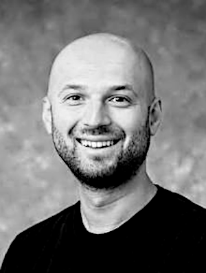

Aws Albarghouthi is an associate professor of computer science at the University of Wisconsin-Madison.He received his PhD from the University of Toronto in 2015. He works in the field of programming languages and formal methods and over the past few years he has been focused on building the software stack for future quantum computers. He has received several paper awards for his work, an NSF CAREER award, and multiple awards from industry.
Abstract: Quantum circuit optimizers are critical components of the quantum computing pipeline: they reduce circuit size so that computations can run on a given quantum device more quickly and with a lower probability of error. The kinds of quantum computations that we expect to achieve quantum advantage, such as Shor’s algorithm and quantum chemistry simulations, may require millions or even billions of operations. How can we scale quantum circuit optimizers to handle such large circuits?
This talk is about building fast, scalable optimizers based on a simple philosophy: an optimizer should implement a sequence of passes, each consisting of a linear scan through the circuit. By ensuring that each pass runs in linear time, we allow the optimizer to gracefully scale with circuit size. We will present novel linear-time algorithms for phase folding and other stages of optimization, and demonstrate orders-of-magnitude improvements over existing optimization tools and algorithms.